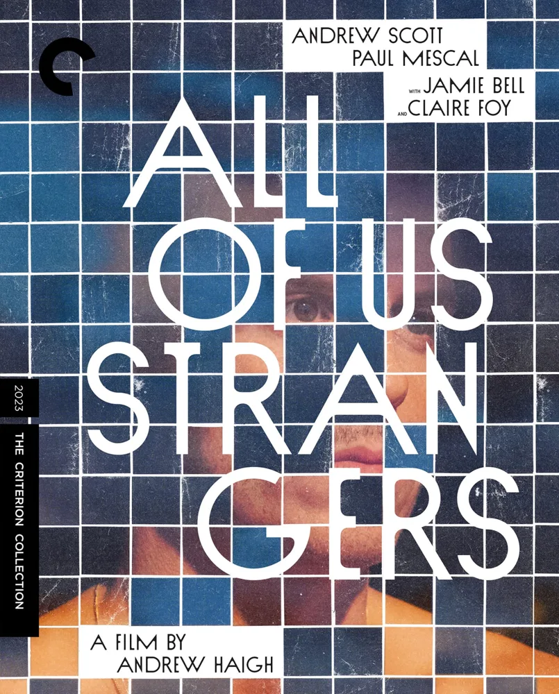

All of Us Strangers

有 Claire Foy 的片怎能錯過？錯過的原因，一部分當然是對 queer films 的不耐煩。
從視覺文案看來，以為又是一部縱情縱慾縱傷悲的無明劇。
但是我錯了。
Haigh 除了出色品味 (各種)，敘事的精度也令人嘆為觀止。幾度必須停下來想：這真的是 directed 出來的畫面嗎？
Haigh 再次提醒我們一件只有電影能辦到的事：弄假成真。慧黠腳本時常有點駭人氣質，All 卻是不疾不徐，不增不減。
不是技驚四座的金獎猛片，從容自成如室內樂或這牆演出，讓人無設防地純粹被演出包覆、迷向。